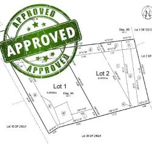

Note: An updated, more detailed how-to guide for subdivision has been prepared. See: Queenstown / Wanaka Subdivision Success: A How-To Guide (May 2020). This post is retained for reference.
Property values within the District have been rising strongly. For many, the temptation to subdivide and realise that value has never been greater. If you are fortunate enough to be in this position, our top tips will help you prepare for launch.
Step 1: The Planning Rules
Before you seriously consider subdividing, you need to establish whether you can under the Planning Rules. The Planning rules are found in the Operative District Plan. Find out what Planning Zone your property is in by checking the Planning Maps, then look at the Subdivision Rules.
The first set of rules to focus on are the minimum lot size: is your property large enough to subdivide? In general the rules fall into two categories:
- Urban land (residential zones): You can subdivide provided you meet the minimum lot size and related rules.
- Rural General land (most rural land in the District): There is no specific minimum lot size. The entire application will be assessed by the Council on its merits.
Tip: Do not spend too much time going through the rules at this stage. Just enough to get a general idea of what will be required.
Step 2: Make an Enquiry With Council
The rules around subdivision are complicated. Once you have taken an initial look at the rules, contact the Council's Duty Planner. This is a free service and they will be able to provide a wealth of information on how to get started.
You also want to make an enquiry with the Council's Development Contribution Officer to get an idea of the likely financial contribution required once you subdivide. A Development Contribution is a financial charge levied on new developments under the Local Government Act 2002. It ensures that any party who creates additional demand on Council infrastructure contributes to the extra cost imposed on the community.
Tip: Make sure you obtain an estimate of the likely development contribution early. It is a significant part of the subdivision cost.
Can You Subdivide Your Property?
Enter your address and we will give you a free high-level overview of the subdivision rules for your specific site.
Step 3: Engage the Professionals
The Council will not prepare your application for you. Engage a trusted professional to provide advice on your proposal and help design your subdivision. You will be required to apply for a resource consent to subdivide, and this is something every Planning Consultant has experience in.
A Surveyor is needed to physically survey the land and prepare accurate subdivision plans. They will also assist in designing the engineering-related aspects of the development (vehicle access, services). Your Planning Consultant would often arrange this for you so you are dealing with one contact.
Tip: In order to save on consultant costs, try designing the subdivision of the property yourself first. Walk around the site with an aerial map and work out the most logical position for the new boundary, access, and new services (water, electricity, wastewater).
Step 4: Resource Consent
All subdivision must be approved by the Council through the granting of a resource consent. The likely time for this process varies greatly depending on the nature and complexity of the subdivision and its location. Subdivision of rural land is often a "Publicly Notified" resource consent application and can take close to a year or more to be approved.
Tip: Consulting with your neighbours early can speed up the resource consent process.
Step 5: Survey Plan and Physical Works
Your surveyor will prepare a more detailed survey plan of the subdivision and submit it to the Council for approval.
The approved resource consent will almost certainly contain conditions requiring physical works to be undertaken. Common examples include the installation of services, forming vehicle access, and earthworks. This usually represents the majority of your subdivision cost. Your Planning Consultant and Surveyor will often assist you in arranging these works.
Tip: Obtain quotes from multiple contractors. You may be surprised at the differences.
Step 6: Apply for Completion of Subdivision
Works are completed, the legal and survey matters done, and the development contribution has left a hole in your wallet. It is time to apply to finalise the process. Your consultants will make a formal application to the Council's Subdivision Officer, who will check that all conditions of consent have been satisfied and issue a certificate confirming the subdivision can be finalised. Your consultants will then submit to Land Information NZ (LINZ) to get the new titles issued.
Tip: Unless otherwise specified in the resource consent, you will have a maximum of 5 years to have the survey plan certified by the Council, and a further 3 years to complete the physical works and finalise the subdivision.
Step 7: Subdivision Success
You can now sell your newly-created property and make it all worthwhile. Provided you have obtained good advice throughout, the overall process should have been relatively stress-free and costs tightly controlled.
There is no harm in finding out whether you are likely to be able to subdivide. Contact us and we will let you know, absolutely free and without commitment.
Frequently Asked Questions
It depends on your Planning Zone, the size of your property, and any covenants or consent notices registered on your title. In residential zones, subdivision is generally possible provided minimum lot size requirements are met. In rural zones, there is often no minimum lot size and the Council assesses each application on its merits. Contact us for free, no-obligation advice on your specific site.
A development contribution is a one-off payment to QLDC to help fund infrastructure upgrades created by your new lot. As a rough ballpark, anticipate approximately $20,000 to $35,000 for a residential subdivision creating one additional lot. The actual amount depends on location and nature of the subdivision. QLDC provides a free estimate calculator on their website.
For a fairly standard subdivision, assume 6 to 8 weeks for the resource consent process. More complex applications can take significantly longer. Subdivision of rural land requiring a publicly notified resource consent can take close to a year or more. The overall process from first enquiry to new titles is typically several months to over a year.
In many cases, no. If your subdivision aligns with the District Plan requirements, all physical works are within your property, and you do not need access over a neighbouring property, neighbour approval is usually not required. We always recommend discussing your proposal with neighbours early as it can speed up the resource consent process.
You will typically need a Planning Consultant to prepare and manage the resource consent application, and a Surveyor to prepare the scheme plan and legal survey work. Depending on the site, you may also need a Geotechnical Engineer, Traffic Engineer, or Landscape Architect. A lawyer is required for any title covenants and the final title transfer process.
It varies by Planning Zone. In urban residential zones, minimum lot sizes are specified in the Queenstown Lakes District Plan. In many rural zones, there is no specified minimum lot size and the Council assesses each proposal holistically. The specific rules depend on which zone your property is in and any overlay provisions that may apply.
Costs vary significantly. For a relatively straightforward subdivision, estimated total costs are typically in the range of $50,000 to $100,000 or more, including application fees, professional services, physical works, LINZ fees, and the Council development contribution. Subdividing around an existing dwelling is usually less expensive than creating a new vacant lot.
Normally, you need to gain the Section 223 survey plan certification within 5 years from when the resource consent was granted, and have the Section 224(c) certificate issued within 3 years after that. Extensions can be applied for before the consent lapses. If you do not comply with these timeframes, the resource consent may expire and you may need to re-apply.
Find Out if You Can Subdivide
Free complexity score for your specific site. We will tell you exactly what the rules are.